SAFARI
Users
Cooking & Storing Rice Noodles
Whether fresh or dried, rice noodles are fully cooked. Most need only enough cooking time to heat them up, some (mostly soaked dried ones) need a few minutes, but the thickest dried ones may need 15 minutes.
Storing, Dried:
Dried Rice Noodles of all types should just be stored in a sealed plastic bag to exclude dust and insects - though insects seem little interested in dried rice noodles.Storing, Fresh:
Don't Refrigerate, as it severely changes their texture, making them impossible to unwrap if in sheets. In their sealed package at a cool room temperature they will still be fine the day after purchase. Some forms are now shipped in sterile packaging (heavier plastic, tightly wrapped). These may remain good for a number of days at room temperature. Open packages will start to mold in a day.Fresh / Dried Ratio:
Fresh and dry are interchangeable for many uses. If the recipe calls for fresh, use 1/2 the weight dry. If the recipe calls for dry, 2 times the weight fresh.Timing, Dried:
Soak in a heatproof bowl, with plenty of hot water poured over. The thinnest (fine 0.020 in / 0.5 mm) may take as little as 5 minutes and almost no cooking time. the thickest (0.070 in / 1.8 mm) a good hour soaking and up to 15 minutes simmer. Medium and wider (0.025 / 0.65 mm x 0.375 / 10 mm) 45 minutes soak and around 4 minutes cooking. Over-soaking is not a problem, they can be kept in the soaking water for hours - over-cooking is a problem.Timing, Fresh:
Not much more then just getting them up to recipe temperature.Wet Cooking:
Unlike Bean Starch noodles, these will start falling apart if cooked much more than the minimum required. Add them to recipes in the last minutes. Soaked dried noodles, especially larger sizes, are often cooked separately from the recipe and added to it at the last moments. I set a strainer over a heatproof catch bowl or pot, then drop the noodles into the boiling water. When ready (time depends on thickness), dump them out through the strainer. Noodles can go directly from the strainer to the recipe, but if they need to be held, rinse with cold water to prevent sticking. Reheat briefly when needed. Hot water in the catch bowl can be returned to the cooking pot for more noodles, or to be ready to reheat cold ones.Stir Fry:
This is tricky because thin noodles can start to stick to the pan almost immediately, and then start to break up. Basically, when the stir fry is otherwise done, quickly spread the noodles over the top, then tumble them in as quickly as possible and serve immediately.Soaked dried noodles are a bit more forgiving than fresh, and ones just a little thicker are easier than the thinnest. Most unforgiving are fresh noodles unrolled and cut from Rice Rolls ( 370 and 371. I've had less trouble with 363, but that may not always be the case. I suspect Thai restaurants use a fresh wide noodle a little thicker than common in the markets. Of course, if you have a Rice Cake Block you can slice them to the thickness you want.
Varieties - Dried
Spring Roll Wrappers
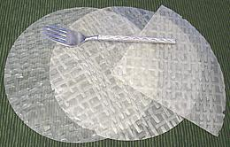 [221 Bánh Trang (Viet)
These are used in Thailand and Vietnam to make various spring rolls, both fresh and deep fired. They are extremely thin and take practice handling. The photo specimens are 8-1/2 inches diameter and 0.007 inch / 0.18 mm thick (yes, that's 7 thousandths of an inch).
Buying & Storing:
These will be found in any market serving a Southeast Asian community. Store in a sealed bag to prevent entry of insects and they will last indefinitely.Cooking
: These are first moistened just enough to make them flexible. I do this either by laying them on a damp cloth and brushing them with water or setting them on a plate full of water (one at a time). In a few seconds they're ready to use. They are then folded and rolled into packets which may be served as-is or deep fried depending on the recipe used. Handling them takes a little practice. Full details, including step-by-step photo gallery, will be found in our recipes Summer Rolls and Spring Rolls.Rice Flake
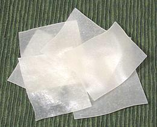 [219, Bánh Uot, Bánh Cuôn (Viet); Guay Jub (Thai)]
These are easily available in Los Angeles but may be scarce in other parts
of the country. The photo specimens, made in Thailand, are Bánh
Uot, 2 inch x 2 inch random squares 0.025 inch thick. I have also found
Bánh Cuôn, made in Vietnam, which are 1.3 x 1.9 inch random
rectangles 0.020 inch thick. Both are used in certain soups in Vietnam,
but they will also work in the famous Thai Beef with Broccoli stir fry,
and are easier to work with than fresh rice noodles.
Rice Vermicelli - Fine
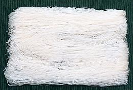 [009, Bánh Hoi (Viet), Sen Mee (Thai); Mee Hoon, Bi Hun (Malay); Rice Stick]
The name "Bánh Hoi" can be a bit confusing, because it also is
the name used for the roving forms, both dried (
360) and fresh (362), which are also
called "Fine Rice Vermicelli" in English. There is actually a steaming
method for making this form into an imitation of the roving form. These
rice noodles are about 0.020 inch (0.5 mm) diameter and sold in skeins
weighing from 3.5 to 4 ounces. This form soaks in only 4 to 5 minutes in
warm water. It can be given a quick dip in boiling water, then rinsed
in cold water and is ready for recipes. They are often used in salads
and the like, but this form can be used in soups and stir fries if
cooking time is very short.
Rice Noodle - Thin
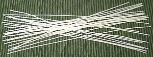 [222, Bún Que Lam, Bún Giang Tây Soi Nho (Viet); Rice Stick]
Bún Giang Tây means "Straight Rice Noodles", Soi Nho means
"Thin". These are 0.04 inch diameter (1 mm), straight and cut to a
length of 7-3/4 inches. These were made in China, and are very popular in
Guilin city in the Guangxi region of China. That's just across Vietnam's
northern border, and these were obviously packaged with the Vietnamese
market in mind.
Rice Noodle - Bún Bò Huê
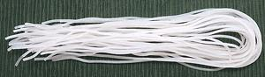 [364, Bún Bò Huê (Viet); Rice Stick]
These are relatively large rice noodles, 0.070 inch diameter (1.8 mm)
and 18.5 inches long. They are for use in Bún Bò Huê,
a popular spicy Vietnamese beef (bò) soup, originating from the
city of Huê in central Vietnam. These take a 60 minute soak in
warm water, followed by boiling for 10 to 15 minutes. They are cooked
separately from the soup and added at serving.
Rice Noodles - Narrow (2 mm)
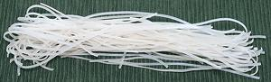
[374 Bánh Pho Viêet Mien Lào; (Viet); Rice Sticks]
The name Bánh Pho indicates they are flat, and expected to be used
in the famous Vietnamese soup "Pho", but wider noodles also carry this
name. Noodles like these may be used in Pho in South Vietnam, while wider
ones are liked in North Vietnam. I have used these successfully for Pad
Thai. These were 0.08 inches wide by 0.03 thick (2 mm x 0.75 mm) and sold
in 7 ounce skeins. Soaking time is about 30 minutes. Product of Thailand.
Ing: rice, water.
Rice Noodles - Narrow (3 mm)
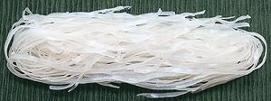
[365 Bánh Pho Kho; Chantaboon, Janta boon, Sen Lek, Sen, Chan, Guay Tiew Chantaburi (Thai); Rice Sticks]
The name Bánh Pho indicates they are flat, and expected to be used
in the famous Vietnamese soup "Pho" (Kho means dried), but wider noodles
also carry this name. Noodles like these are used in Pho in South Vietnam,
while wider ones are liked in North Vietnam. These were 0.125 inches
wide by 0.025 thick (3 x 0.64 mm) and sold in 7 ounce skeins. Soaking
time is about 40 minutes. Product of Vietnam. Ing: rice flour, tapioca
starch, water, salt.
Rice Noodles - Wide (10 mm)
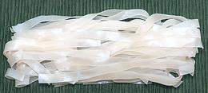
[220 Bánh Pho Kho; Chantaboon, Janta boon, Sen Yai (Thai); Rice sticks, Ho fun (Cantonese); Shahe fen (Mandarin).]
These are the widest rice noodles commonly found in the Asian markets
here in Los Angeles. The name Bá Pho indicates they are flat, and
expected to be used in the famous Vietnamese soup "Pho", but narrower
noodles also carry this name. Noodles this wide may be used in North
Vietnamese pho, but narrow ones are used in South Vietnam. These were
0.375 inches wide by 0.025 thick. This noodle will expand to about 0.45
inches wide when fully soaked in warm water (about 45 minutes) and
briefly cooked. Product of Thailand. Ing: rice flour, water, salt.
Rice Fine Vermicelli Roving - Dried
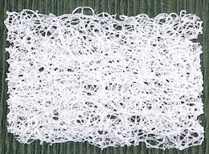
[360, Bánh Hoi (Viet)]
These sheets of dried fine rice vermicelli measured 2-3/4 x 4 inches and 0.15 inch thick. Instructions are not specific as to use, however, the photo on the front of the package shows them rolled up as wrappers. Soak in boiling water 20 seconds, and let drain for 3 minutes. They remain quite intact.
They are most often served as little rolls, almost
always sprinkled with briefly fried Garlic Chives, and sometimes dried
shrimp. They accompany roast duck, roast pork belly, grilled beef and
similar items. These were purchased from a large Asian market in
Los Angeles (San Gabriel) for 2019 US $1.29 for 12 ounces. Ing: rice
flour, water, salt.
Rice Noodle Shapes - Dried
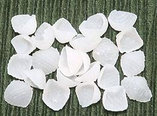 [361, Nui Gao (Viet)]
Rice flour dough is not nearly as suitable for complex shapes as
duram wheat dough, but a few simple shapes are made and to be found in
Asian markets. Most commonly are these tiny shells, and small tubes.
these shells were 0.4 inches long. Ingred: rice four 86%, tapioca starch
13%, salt, pentasodium triphosphate.
Varieties - Fresh
While all the dried rice noodles on this page were made in Vietnam, Thailand, and China, all the fresh ones were, of necessity, made in Los Angeles and Orange Counties, California. Local delivery is critical for these, and they are consumed in great quantity by the huge Vietnamese, Chinese, Thai, and Korean communities in the region, as well as a fast growing enthusiasm for Asian cuisines by other Californians.
Fresh Rice Cakes
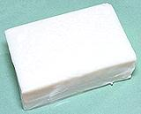
Fresh blocks, sticks, ovals and other solid forms, fresh, dried, or frozen,
have their own Rice Cakes page, as they
are handled differently from noodles.
Fresh Rice Paper - Noodle Sheets
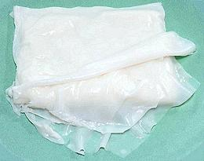
[370, Rice Roll; Bánh Uot ("Wet Cake" - Viet), Bánh Móng ("Thin Cake" - Viet)]
These are found in markets serving Asian communities, from Korean on south to Indonesian. The Korean markets around here generally have only the sheet form, but markets serving Southeast Asian communities may have more than 10 varieties of cut sheet and other fresh rice noodles.
The photo shows uncut sheets called Bánh Móng. These are in the form of long sheets stacked and folded, but some makers sell stacks of sheets cut to package size. The sheets are very thin and coated with oil so they can be separated from the bundle. Sheets of the photo specimen were 0.03 inch (0.76 mm) thick. The bundle was about 6-1/2 x 4-1/2 inches and weighed 1.5 pounds. Ing: rice, water, wheat starch, cotton seed oil, salt, sodium sulphate, sodium benzoate.
Buying & Storing:
These are intended to be purchased and used on the day they are made, but will still be OK the following day or a little more if unopened - after that, they will start to mold and get a strange taste.Do not refrigerate.
Refrigeration changes the texture of the noodles and they will break up when you try to peel them off the bundle, even if you have warmed them back up. A major battle was fought in California between Asian markets and the Health Department. The Health Department finally yielded to the extent that Rice products may be displayed and sold without refrigeration, but only for one day.Fresh Rice Paper Roll, Long
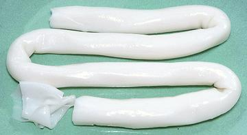 [371, Bá Cuôn Rice Cake Rolled]
These are the same as #370, except rolled from a very wide sheet, up to
30 inches wide. The photo specimen was 0.040 inch (1 mm) thick All other
conditions and handling are exactly as for the sheet form
Rice Roll described above.
Fresh Rice Paper Roll with Chives & Dried Shrimp
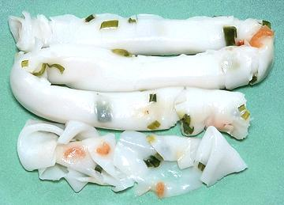
[372, Bá Cuôn Rice Cake Rolled]
This is the same as #371, except embedded with Garlic Chives and dried
shrimp. It is apparently quite popular with the Vietnamese community,
as almost every market that has #371 also has this form. .040 inch (1 mm)
thick.
Fresh Rice Noodles - Rice Paper Precut
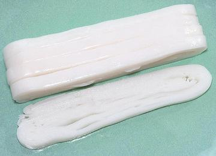
[363; Bánh Pho Túói]
These are precut fresh rice noodles (Túói means "fresh"),
basically a sliced Rice Roll - but the Rice Roll sheets may be thicker
than the full sheet ones. They are available in several widths -
you just need to unfold and pull them apart for use (a little tedious,
but necessary). Do this well before cooking - there won't be time later.
All other conditions and handling are exactly as for the
sheet form Rice Roll described above. The
photo specimens were 0.4 inches (10 mm) wide, 0.04 inch (1 mm) thick
and 20 inches long.
Fresh Soup Noodles, Thick - Bá Caneh
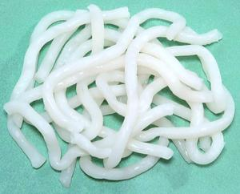
This is a family of thick noodles used in various soups (Caneh), all sold fresh in plastic bags. They vary a bit in composition, but the names following "Bánh Canh" aren't very helpful. An important difference is the ratio between rice flour and tapioca starch. The more tapioca compared to rice flour, the more firm and chewy the noodle. Here are several of them. The photo is of Bánh Canh Bôt Gao Loc, but they all look pretty much the same.
Bánh Canh Bôt Gao Loc:
"Filtered Rice Flour" Stays quite chewy in soup. 0.250 inch diameter. Ing: Rice Four, Tapioca Starch, Water, Soy Bean Oil, Salt, Sodium Benzoate.Bánh Canh Doc:
"Opaque" - quite tender in soup. 0.200 inch diameter. Rice, Wheat Starch, Potato Starch, Water, Sodium Benzoate.Bánh Canh Trong:
"In" - These stayed medium firm in soup, but don't quite qualify as "rice noodles". 0.190 inch diameter. Ing: Water, wheat starch, potato starch, sodium benzoate.Fine Rice Vermicelli Roving - Fresh
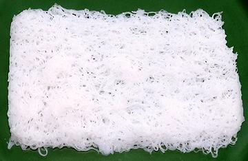 [362: Bánh Hoi Túói (Viet)]
This Vietnamese form is a bit unusual, composed of a roving of very thin strands. It's sold in 3-1/4 x 5 inch pads, around 0.2 inch thick, as shown in the photo, but also in the Rice Roll form, in which case it is thinner and looser, looking rather like cheesecloth.
They are used "as is", as even a second in hot water and they disintegrate. They are most often served as little rolls or squares, almost always sprinkled with briefly fried Garlic Chives, and sometimes dried shrimp. They accompany roast duck, roast pork belly, grilled beef and similar items.
In my experiments, I have deep fried squares of both forms until light golden. This produces something like vegetarian pork rinds. They are crispy, and have a taste suggestive of Rice Crispys (unsweetened).